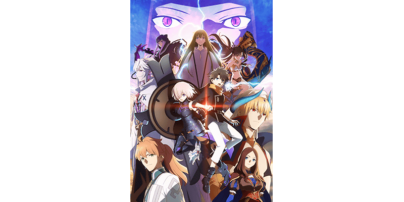

為了記念TV動畫「Fate/Grand Order -絕對魔獸戰線巴比倫尼亞-」自2019年10月5日(六)放送，舉辦『TV動畫「Fate/Grand Order -絕對魔獸戰線巴比倫尼亞-」放送記念宣傳活動』！
※本頁面皆為開發中圖片。會有與實際圖片相異的情況。
◆舉辦期間◆
2019年10月2日(三) 17:00～10月16日(三) 11:59


【節目名】
Fate/Grand Order -絕對魔獸戰線巴比倫尼亞-
【放送時間】
TV
・TOKYO MX、BS11、群馬テレビ、とちぎテレビ:自10月5日(六)每週六22:30
・MBS:自10月12日(六)每周六25:08
※第2話10月13日(日)深夜放送、第3話以後與他局同日放送
・AT-X:自10月7日(一)每週一21:30
リピート放送:每週(三)15:30/每週(五)2/:30/每週(日)25:30
・北陸放送:自10月18日(五)每週五25:55
※放送時間可能因編成的情況而有所變更。
配信
・AbemaTV:自10月5日(六)每周六22:30
・dアニメストア、ニコニコ生放送、ニコニコチャンネル:自10月6日(日)每周日22:00
・Amazonプライム・ビデオ、バンダイチャンネル、Hulu、ビデオパス、J:COMオンデマンド メガパック、FOD、U-NEXT、アニメ放題、GYAO!、ひかりTV:自10月8日(二)每周二11:00
・Netflix:自10月8日(二)每周二22:00
※配信時間可能因編成的情況而有所變更。

在宣傳活動期間中登入的話，贈送可交換繪製「第七特異點」登場從者★5(SSR)期間限定概念禮裝1張的『TV動畫「FGO -絕對魔獸戰線巴比倫尼亞-」放送記念券』！
宣傳活動期間中，可從交換對象概念禮裝之中選擇喜愛的1張交換！
◆宣傳活動舉辦期間◆
2019年10月2日(三) 17:00～10月9日(三) 2:59
※請注意『TV動畫「FGO巴比倫尼亞」放送記念券』的領取只限上述期間。
◆概念禮裝交換期間◆
2019年10月4日(五) 17:00～10月16日(三) 11:59
※想要『TV動畫「FGO巴比倫尼亞」放送記念券』交換贈送對象概念禮裝，必須在交換期間內推進至通過「特異點F 炎上汙染都市 冬木」。
◆交換方法◆
2019年10月2日(三) 17:00～10月9日(三) 2:59之間，在最初進行登入時賦予『TV動畫「FGO巴比倫尼亞」放送記念券』至禮物箱。
從禮物箱領取『TV動畫「FGO巴比倫尼亞」放送記念券』後，點擊管理室(ターミナル)畫面右上的「道具交換」或自達文西工房的「活動道具交換」，才能交換★5(SSR)期間限定概念禮裝6張之中喜愛的1張。
※請注意交換時間為「2019年10月4日(五) 17:00～10月16日(三) 11:59」。
※交換後的概念禮裝會送至禮物箱，『TV動畫「FGO巴比倫尼亞」放送記念券』消失。
※請注意就算未交換的情況，在概念禮裝交換期間結束後『TV動畫「FGO巴比倫尼亞」放送記念券』也會消失。
◆交換對象◆
現在『TV動畫「Fate/Grand Order -絕對魔獸戰線巴比倫尼亞-」放送記念宣傳活動』的轉推宣傳活動舉辦中！
下述的期間內達成10萬轉推的話，向遊玩遊戲的所有御主贈送宣傳活動限定的概念禮裝1張與聖晶石30個(聖晶石召喚最多11次份)！
對象推特:
「Fate/Grand Order」官方推特:【カルデア広報局より】
— 【公式】Fate/Grand Order (@fgoproject) 2019年9月22日
TVアニメ「FGO -絶対魔獣戦線バビロニア-」放送記念リツイートキャンペーンを開催！9/22(日)～10/4(金)23:59までの期間に本ツイートのリツイートが10万達成で、「★4(SR)キービジュアル概念礼装」と「聖晶石30個」を全マスターにプレゼント！→https://t.co/zg7F6Q1Ofr #FGO pic.twitter.com/B9O3ChoWZH
@fgoproject
※(聖晶石召喚最多11次份)僅限進行同一個聖晶石召喚情況。
◆舉辦期間◆
2019年9月22日(日) 14:30～10月4日(五) 22:59
※已經達成10萬轉推。感謝協助。
◆配布預定日◆
2019年10月6日(日) 23:00～10月13日(日) 2:59的期間中，在最初進行登入的時間點，贈予至禮物箱。
◆贈送對象◆
所有的御主對象
※在舉辦期間內達成10萬轉推的情況，新御主玩家，必須要在做為配布預定最終日的10月13日(日) 2:59前推進至通過「特異點F 炎上汙染都市 冬木 第3節 進行度1」。
| 達成目標 (轉推數) |
達成報酬 | |
|---|---|---|
| 10萬轉推 | ★4(SR)絕對魔獸戰線巴比倫尼亞 | |

|
聖晶石 30個 | |
※在期間內未登入的情況無法領取達成報酬。
◆TV動畫「Fate/Grand Order -絕對魔獸戰線巴比倫尼亞-」放送記念宣傳活動限定概念禮裝◆

|
★★★★SR |

為了記念『TV動畫「Fate/Grand Order -絕對魔獸戰線巴比倫尼亞-」放送記念宣傳活動』舉辦，實施特別登入獎勵。
在下述期間中登入7次(1天算1次)的話，贈送包含睿智的猛火ALL★4(SR)、英靈結晶・星之芙芙ALL★3(HP)、英靈結晶・太陽之芙芙ALL★3(ATK)、呼符等報酬！
◆舉辦期間◆
2019年10月3日(四) 3:00～10月10日(四) 2:59
◆贈送對象◆
所有的御主對象
※新御主玩家必須推進至通過「特異點F 炎上汙染都市 冬木 第3節 進行度1」。
| 登入次數 | 贈送內容 | |
|---|---|---|
| 第1次 | 友情點數 7,000pt | |
| 第2次 |

|
睿智的猛火ALL★4(SR) 7張 |
| 第3次 |

|
白銀果實 7個 |
| 第4次 |

|
魔力稜鏡 70個 |
| 第5次 | 英靈結晶・星之芙芙ALL★3(HP) 7張 | |
| 第6次 |

|
英靈結晶・太陽之芙芙ALL★3(ATK) 7張 |
| 第7次 |

|
呼符 7張 |
※登入獎勵會在每天3:00配發。 ※最多能領取7次，但根據成為贈送對象的時間點，可能無法到此上限。
在迦勒底之門，TV動畫「Fate/Grand Order -絕對魔獸戰線巴比倫尼亞-」回想關卡以期間限定出現！
通過各關卡的話，可獲得、聖晶石和呼符。
TV動畫「Fate/Grand Order -絕對魔獸戰線巴比倫尼亞-」回想關卡就算通過後也不會消失，能無數次挑戰。
另外，關卡開頭中可觀賞TV動畫的一個場面。
※在關卡開始時必須下載資料。 ※請注意本影片就算觀看後也不會登錄到圖鑑(マテリアル)。 ※使用行動網路的情況，請注意通訊限限制等。
※回想關卡為主線關卡第1部第七特異點為主的推薦Lv.70程度關卡。
◆舉辦期間◆
2019年10月6日(日) 23:00～10月26日(六) 22:59
◆關卡開放條件◆
通過「特異點F 炎上汙染都市 冬木」的御主對象
| 關卡名 | 初次通過報酬 | 舉辦期間 | |
|---|---|---|---|
| TV動畫「FGO -絕對魔獸戰線巴比倫尼亞-」Ep. 1回想關卡 |
|
聖晶石 1個 | 2019年10月6日(日) 23:00～ 10月12日(六) 22:59 |
| TV動畫「FGO -絕對魔獸戰線巴比倫尼亞-」Ep. 2回想關卡 |
|
聖晶石 1個 | 2019年10月12日(六) 23:00～ 10月19日(六) 22:59 |
| TV動畫「FGO -絕對魔獸戰線巴比倫尼亞-」Ep. 3回想關卡 |
|
呼符 1張 | 2019年10月19日(六) 23:00～ 10月26日(六) 22:59 |
※關卡通過報酬、戰利品、御主EXP、魔術禮裝EXP、絆點數只可在初次通過時獲得。

下述的期間中，在「御主任務」的「限定」標籤內以期間限定追加『TV動畫「Fate/Grand Order -絕對魔獸戰線巴比倫尼亞-」放送記念限定任務』。
通過所有任務的話，可得到最多10個聖晶石！
◆舉辦期間◆
2019年10月2日(三) 17:00～10月9日(三) 11:59
◆領取期間◆
2019年10月2日(三) 17:00～10月16日(三) 11:59
◆追加任務◆
| 任務名稱 | 任務達成報酬 | |
|---|---|---|
| 【TV動畫「FGO -絕對魔獸戰線巴比倫尼亞-」放送記念】 靠戰利品獲得『龍之牙』1個 |
|
聖晶石 1個 |
| 【TV動畫「FGO -絕對魔獸戰線巴比倫尼亞-」放送記念】 靠戰利品獲得『追憶的貝殼』1個 |
|
聖晶石 1個 |
| 【TV動畫「FGO -絕對魔獸戰線巴比倫尼亞-」放送記念】 靠戰利品獲得『混沌之爪』1個 |
|
聖晶石 1個 |
| 【TV動畫「FGO -絕對魔獸戰線巴比倫尼亞-」放送記念】 擊倒20名持有『猛獸』特性的敵人 |
|
聖晶石 1個 |
| 【TV動畫「FGO -絕對魔獸戰線巴比倫尼亞-」放送記念】 擊倒20名持有『龍』特性的敵人 |
|
聖晶石 1個 |
| 【TV動畫「FGO -絕對魔獸戰線巴比倫尼亞-」放送記念】 擊倒20名『鬼魂』系的敵人 |
|
聖晶石 1個 |
| 【TV動畫「FGO -絕對魔獸戰線巴比倫尼亞-」放送記念】 擊倒3名持有『超巨大』特性的敵人 |
|
聖晶石 1個 |
| 【TV動畫「FGO -絕對魔獸戰線巴比倫尼亞-」放送記念】 通過3次『森林』場景的自由關卡 |
|
聖晶石 1個 |
| 【TV動畫「FGO -絕對魔獸戰線巴比倫尼亞-」放送記念】 通過3次『燃燒』場景的自由關卡 |
|
聖晶石 1個 |
| 【TV動畫「FGO -絕對魔獸戰線巴比倫尼亞-」放送記念】 通過所有的任務 |
|
聖晶石 1個 |
※10月2日(三) 17:00錯字修正 ※請注意舉辦期間與領取期間有所差異。 ※請注意與每週日23:00更新的普通任務(Weekly)不同欄位，超過領取期間的話無法入手報酬。 ※就算達成『TV動畫「FGO -絕對魔獸戰線巴比倫尼亞-」放送記念限定任務』，也不會計算在普通任務(Weekly)的任務進行度。 ※根據主線關卡的進行度會有無法達成『TV動畫「FGO -絕對魔獸戰線巴比倫尼亞-」放送記念限定任務』的情況。
迦勒底之門內每日出現的關卡「蒐集種火」與「修練場」以期間限定全種開放。
◆舉辦期間◆
2019年10月2日(三) 17:00～10月9日(三) 11:59
※關卡通過報酬的魔力稜鏡只限初次通過時才可獲得。 ※請注意由於以期間限定出現的「蒐集種火」及「修練場」與平常每日出現的「蒐集種火」及「修練場」的關卡不同，不會繼承「關卡情報」。 ※舉辦期間中，不會重置關卡通過報酬。
【全天開放的蒐集種火一覧】
| 關卡名 | 可做為戰利品獲得 的主要道具 |
攻略推薦 職階 |
|---|---|---|
| 【7章動畫放送記念】 週一 蒐集種火<槍・殺篇> 初級、中級、上級、超級 |
Lancer、Assassin、Berserker的經驗值卡 |   |
| 【7章動畫放送記念】 週二 蒐集種火<劍・騎篇> 初級、中級、上級、超級 |
Saber、Rider、Berserker的經驗值卡 |   |
| 【7章動畫放送記念】 週三 蒐集種火<弓・術篇> 初級、中級、上級、超級 |
Archer、Caster、Berserker的經驗值卡 |   |
| 【7章動畫放送記念】 週四 蒐集種火<槍・殺篇> 初級、中級、上級、超級 |
Lancer、Assassin、Berserker的經驗值卡 | |
| 【7章動畫放送記念】 週五 蒐集種火<劍・騎篇> 初級、中級、上級、超級 |
Saber、Rider、Berserker的經驗值卡 | |
| 【7章動畫放送記念】 週六 蒐集種火<弓・術篇> 初級、中級、上級、超級 |
Archer、Caster、Berserker的經驗值卡 | |
| 【7章動畫放送記念】 週日 蒐集種火<隨機篇> 初級、中級、上級、超級 |
Saber、Archer、Lancer、Rider、Caster、Assassin、Berserker的經驗值卡(隨機) | - |
※Berserker在所有每日關卡皆為有效職階。
【全天開放的修練場一覧】
| 關卡名 | 可做為戰利品獲得 的主要道具 |
攻略推薦 職階 |
|---|---|---|
| 【7章動畫放送記念】 週一 弓之修練場 初級、中級、上級、超級 |
Archer的靈基再臨用道具、Archer的技能強化素材道具 | |
| 【7章動畫放送記念】 週二 槍之修練場 初級、中級、上級、超級 |
Lancer的靈基再臨用道具、Lancer的技能強化素材道具 | |
| 【7章動畫放送記念】 週三 狂之修練場 初級、中級、上級、超級 |
Berserker的靈基再臨用道具、Berserker的技能強化素材道具 | ALL |
| 【7章動畫放送記念】 週四 騎之修練場 初級、中級、上級、超級 |
Rider的靈基再臨用道具、Rider的技能強化素材道具 |  |
| 【7章動畫放送記念】 週五 術之修練場 初級、中級、上級、超級 |
Caster的靈基再臨用道具、Caster的技能強化素材道具 | |
| 【7章動畫放送記念】 週六 殺之修練場 初級、中級、上級、超級 |
Assassin的靈基再臨用道具、Assassin的技能強化素材道具 | |
| 【7章動畫放送記念】 週日 劍之修練場 初級、中級、上級、超級 |
Saber的靈基再臨用道具、Saber的技能強化素材道具 | |
※Berserker在所有每日關卡皆為有效職階。
下述的期間中，在進行對象從者的強化時，大成功(經驗值2倍加成)・極大成功(經驗值3倍加成)發生機率以期間限定變成2倍！
務必藉此機會強化對象從者吧！
◆舉辦期間◆
2019年10月2日(三) 17:00～10月16日(三) 11:59
◆對象從者◆
| 職階 | 稀有度 | 從者名 |
|---|---|---|
| Archer | ★★★★★ | 伊絲塔 |
| ★★★★★ | 吉爾伽美什 | |
| Lancer | ★★★★★ | 恩奇杜 |
| ★★★★★ | 艾蕾修卡 | |
| ★★★★ | 美杜莎 | |
| ★★★ | 豹人 | |
| ★★ | 武藏坊弁慶 | |
| ★★ | 雷奧尼達一世 | |
| Rider | ★★★★★ | 魁札爾・科亞特爾 |
| ★★★ | 牛若丸 | |
| Caster | ★★★★★ | 梅林 |
| ★★★★★ | 李奧納多・達文西 | |
| ★★★★ | 吉爾伽美什 | |
| Assassin | ★★★★★ | “山之翁” |
| Avenger | ★★★★ | 戈爾貢 |
| Shielder | ★★★ | 瑪琇・基利艾拉特 |
下述的期間中，對象從者的強化關卡的AP消耗量以期間限定變成1/2！ ※就算在戰鬥中撤退的情況，AP的消耗仍是1/2。
◆舉辦期間◆
2019年10月2日(三) 17:00～10月16日(三) 11:59
◆對象從者◆
| 職階 | 稀有度 | 從者名 |
|---|---|---|
| Lancer | ★★★★★ | 恩奇杜 |
| ★★★★ | 美杜莎 | |
| ★★ | 武藏坊弁慶 | |
| ★★ | 雷奧尼達一世 | |
| Rider | ★★★ | 牛若丸 |
| Avenger | ★★★★ | 戈爾貢 |
下述的期間中，對象從者的幕間物語的AP消耗量以期間限定變成1/2！ ※就算在戰鬥中撤退的情況，AP的消耗仍是1/2。
◆舉辦期間◆
2019年10月2日(三) 17:00～10月16日(三) 11:59
◆對象從者◆
| 職階 | 稀有度 | 從者名 |
|---|---|---|
| Archer | ★★★★★ | 伊絲塔 |
| ★★★★★ | 吉爾伽美什 | |
| Lancer | ★★★★★ | 恩奇杜 |
| ★★★★ | 美杜莎 | |
| ★★★ | 豹人 | |
| ★★ | 武藏坊弁慶 | |
| ★★ | 雷奧尼達一世 | |
| Rider | ★★★★★ | 魁札爾・科亞特爾 |
| ★★★ | 牛若丸 | |
| Caster | ★★★★★ | 李奧納多・達文西 |
| ★★★★ | 吉爾伽美什 | |
| Avenger | ★★★★ | 戈爾貢 |

下述的期間中，主線關卡的友情點數獲得量變成2倍。
將好友和跟隨的御主等做為支援能選擇從者和概念禮裝的編成列入考量，藉此機會入手更多友情點數吧！
※請注意選擇NPC從者做為支援的情況友情點數獲得量也會是2倍。
◆舉辦期間◆
2019年10月2日(三) 17:00～10月16日(三) 11:59
◆對象關卡◆
主線關卡第1部(從特異點F到終局特異點)
主線關卡1.5部(從亞種特異點Ⅰ到亞種特異點Ⅳ)
主線關卡第2部(從Lostbelt No.1到Lostbelt No.4)

向「★5(SSR)伊絲塔(Archer)」追加戰鬥動作！
※只有戰鬥動作的追加。寶具演出沒有變更。
◆實施時間◆
2019年10月2日(三) 17:00～
【10月2日(三) 17:00追加】

其他還有，期間限定『TV動畫「Fate/Grand Order -絕對魔獸戰線巴比倫尼亞-」放送記念Pick Up召喚(每日交替)』同時舉辦！
關於詳情，請自下述橫幅確認。
■TV動畫「Fate/Grand Order -絕對魔獸戰線巴比倫尼亞-」放送記念Pick Up召喚(每日交替)詳細情報